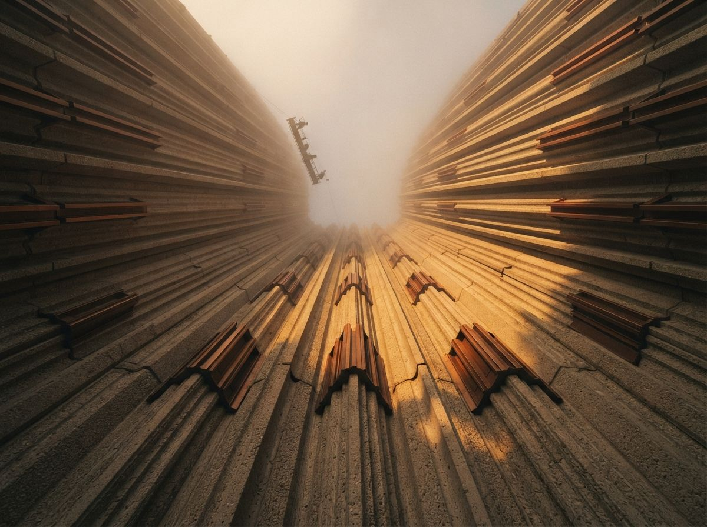
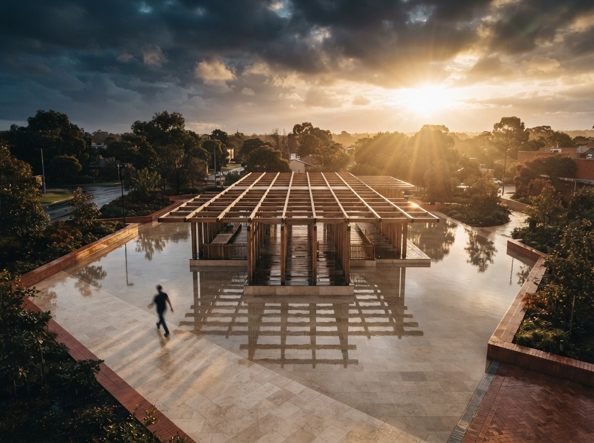

There is a sentence that shows up, almost word for word, in every serious architecture render thread. Add photorealistic lighting, textures and reflections, and maintain the structure. That last clause is the whole job. The architect is not asking the model to imagine a building. They have already designed the building. They are asking it to make their building look real without quietly redesigning it, and that turns out to be the hardest thing to buy in this entire market.
The forum asks the same question every week
Look at what practitioners actually post, as opposed to what gets ranked. On the Flux and ComfyUI boards the request is a workflow that enhances an existing render while holding composition, geometry and scale. On the Stable Diffusion boards it is image-to-image on a real project at print resolution without the output drifting off the source. On the archviz board it is a plea from someone who feels lost among forty tools and just wants the one that respects their model. On Midjourney it is the search for consistency across a set of views of the same design.
Strip the tool names and the ask is identical every time. Keep my lines. Keep my proportions. Keep the window I spent a week getting right. Change the light, the materials, the atmosphere, the things a render is supposed to add. The demand is for restraint, and it is remarkably specific about where the restraint has to hold.

The marketing answers a different question
Now open any tool's front page. The pitch is the before-and-after slider, the gray massing block on the left and the golden-hour showpiece on the right, sold as sketch to photoreal in minutes. The verbs are transform, reimagine, generate. The implicit promise is distance travelled: the further the output is from your input, the more magic you appear to be getting for your money. Transformation is the product, and the more dramatic it looks in a thumbnail, the better it sells.
So the market is running a mismatch in plain sight. The buyer wants a tool that changes as little as possible while making the image believable. The seller advertises a tool that changes as much as possible because that is what demos well. Both parties call it AI rendering, and they mean nearly opposite things by it.
The demo is graded on how far the picture travelled from your model. Your project is graded on how little it did. You are shopping in a store that rewards the exact behaviour you need to suppress.
Why the gap keeps widening
Drama photographs. Restraint does not. A tool that faithfully holds your geometry and only fixes the light produces a before and after that look, to a casual eye, almost the same, which is a terrible thumbnail and a great result. A tool that invents a sweeping cantilever you never drew produces a spectacular thumbnail and a useless render. The incentive gradient in every storefront points toward the second one, so defaults ship hot: high denoise, loose conditioning, an eagerness to improve your building into someone else's.
The r/comfyui poster sharing raw output to manage expectations understood this in their gut. The polished examples that sold them the workflow were cherry-picked from dozens of tries, and half of those winners quietly moved a wall to get there. The gap between the marketing render and the median render is mostly the gap between transformation the tool wanted to do and restraint the architect needed.

Buy and configure for restraint
The fix is to treat fidelity as the spec and shop against the grain of the pitch. Most capable tools can be dialled toward restraint; almost none default there, so the work is in the settings, not the purchase. Here is where the restraint actually lives.
| What you want held | What to reach for |
|---|---|
| Geometry and composition | Design lock or a structure and depth conditioning input, so the model treats your render as a cage, not a suggestion. |
| How far the image may move | A low denoise or strength setting. This one slider decides more about fidelity than the tool brand does. |
| Consistency across a set | A fixed seed plus a reused reference and prompt, so ten views read as one building instead of ten moods. |
| Materials without invention | Reference images and tight prompts for surfaces, rather than open-ended text that lets the model guess. |
None of that appears on a comparison chart, because none of it is a feature you can rank. It is a posture you configure. The tool that wins for you is the one whose restraint controls are real and reachable, not the one with the loudest transformation on its homepage.
The test that actually settles it
There is one check that cuts through every claim. Render your view, then lay the output back over your source model at fifty percent opacity and look at the edges. Do the roofline, the floor levels and the window heads still sit where you drew them, or has the tool nudged them to flatter the picture. Drift you can see at fifty percent is drift a client will feel and a builder will bill you for. A tool that survives the overlay on a hard view has earned your project. A tool that fails it is a beautiful liar, and it does not matter how high it ranked.
Run that test before you fall for the gallery, and the shopping problem inverts in a useful way. You stop asking which tool makes the most impressive image and start asking which one changed your building the least while still making it believable. That is a question with a right answer for your specific project, and it is the question the forums were asking all along.
Our take
The whole category has an honesty problem baked into its shop window. It sells transformation because transformation demos, and it buries restraint because restraint is invisible in a thumbnail, while the people actually rendering real projects want restraint so badly they ask for it, in the same words, in every thread. Stop shopping for the biggest change. Shop for the smallest one that still reads as real. Turn the strength down, feed the model your geometry as a cage, hold the seed, and overlay the result on your drawing before you trust it. Judge the tool by what it left alone. Your building was already good. The job was never to reimagine it. The job was to switch on the lights.
Written from the 6 August 2026 intel sweep, which surfaced a run of community threads (Flux and ComfyUI enhancement workflows, a 4K image-to-image question, an archviz roundup request, a raw-output expectations post) all circling the same need to enhance a render without altering the underlying model. ArchiGen AI carries no sponsored placements.